Paul’s Baby Grand
Vouge Italia 01/07/2014
There are few people that have made New York night life special in the last few years and Paul Sevigny is definitely one of them.
Sevigny has a special talent accomplished by his culture, in create fun in very special atmospheres like you are dancing in the living room of your parents house.
This one is definitely a fancy home: “ Paul's Baby Grand” (at the South corner of the TriBeCa Grand Hotel), his latest gem, where the furniture and every detail that makes the interior was hand-picked by Sevigny himself who had his artist friends give the room its unique finishing touch.
You find Andrè's graffiti at the entrance and in the bathrooms and a conservatively hung collection of paintings on the walls of the artist Josh Smith. Every detail is so well curated and the drinks have names like "Bisou Bisou", "Jackie's cup", "Acapulco Sunset".
The place seems to belong in one of Aaron Slims' pictures and I can say that the pink bar – resembling a four-posted bed - is something we have never seen before … oh also: the staff wears uniforms designed by Paul’s sister, Chloe. Divine!
Paul Sevigny Brings a New Bar to TriBeCa
New York Times 11/21/2013
Could this be (another) new Beatrice Inn? Since being silenced by griping neighbors in 2009, Paul Sevigny’s fashionable West Village bar has been endlessly imitated: Pyongyang door policies, shabby chic furniture, swirls of celebrities and downtown dirtbags. Paul’s Baby Grand, his first solo offering since Beatrice closed, has rejiggered an auxiliary space at the Tribeca Grand hotel into a lounge-like spiritual successor (albeit a smaller and less decadent incarnation).
“People have been taking themselves much too seriously in night life,” said Mr. Sevigny, who hosted private events at Baby Grand during New York Fashion Week, before opening publicly in mid-October. “Design and cocktail-crafting don’t necessarily have to reflect on your inner soul. It’s about fun and entertainment.”
THE PLACE
Baby Grand has a separate entrance along the hotel’s western flank. A narrow corridor stovepipes visitors toward a 1,000-square-foot den with foliage-print wallpaper, tropical paintings by Josh Smith and waiters in floral aprons. “There was a lot of thought in trying to keep this extremely feminine to alienate groups of guys,” Mr. Sevigny said. Still, one could imagine Michael Corleone giving Fredo a New Year’s Eve kiss of death here, instead of in Havana.
THE CROWD
Ritzy without being stodgy: angular blazers and fluffy ostrich coats coexist with beaten leather jackets and stocking caps. Johan Lindeberg, Waris Ahluwalia and Roitfeld-ian critters from the nexus of night life and fashion are regulars. On dance-friendly evenings, staff members ease a ladder past an obstacle course of mismatched couches and coffee tables to affix a disco ball to the ceiling above the swaying crowd.
THE PLAYLIST
Carbonated brew of new wave, classics and soul (think Stevie Wonder, Laid Back and Talking Heads). D.J.s like Cassidy and Max Glazer have dropped by to spin.
GETTING IN
Tidy capacity (around 120) and a fresh-faced doorman make this an unwise destination for hopefuls out of the loop. “My dream customer is a 75-year-old gay, black European,” Mr. Sevigny said. “He’s checked off every box that can get you in.”
Paul's Cocktail Lounge
Roxy Hotel NYC
Paul Sevigny, the paradigm of New York nightlife, chose The Roxy to house his beloved late night destination, Paul’s Cocktail Lounge. Facing 6th Avenue, Paul’s is an intimate space serving crafted cocktails on polished silver trays. The staff sports Latin Palm Beach-inspired uniforms by Paul’s sister and fashion icon Chloe Sevigny. Hand-painted hibiscus wallpaper, patterned mirrors and marble that meet with splashes of emerald and raspberry, and tropical art by New York painter Josh Smith would make Dorothy Draper proud. A rotating cast of NYC’s renowned DJs and music talents spin, along with international guest appearances.
An Anti-Nightclub Called Paul’s Cocktail Lounge In Tribeca
Behind the Scenes NYC 11/18/2015
Located in the high-end neighborhood or TriBeCa, Paul’s Cocktail Lounge was formerly known as Paul’s Baby Grand.
Sevigny is channelling 1930’s designer Dorothy Draper to create a space with ‘plenty of floral patterns, no black leather, no flat screens‘, as said by Condé Nast Traveller!
The place is small and intimate with paintings, graffitis and colorful furniture. The ornate chandeliers that might make you feel a bit nostalgic. If not nostalgic, it can also make you feel a bit…hum, dreamy?! It’s certainly has a playful mood and lots of visual stimuli.
There is a disco ball to put you in the mood and a great no-cellphone rule (well, not that strict though…).
Just be aware that there is a pretty tight door policy, which on the other hand makes it a celebrity magnet! Just, be aware of it since you might have a hard time getting in. They can be pretty….rigorous.

 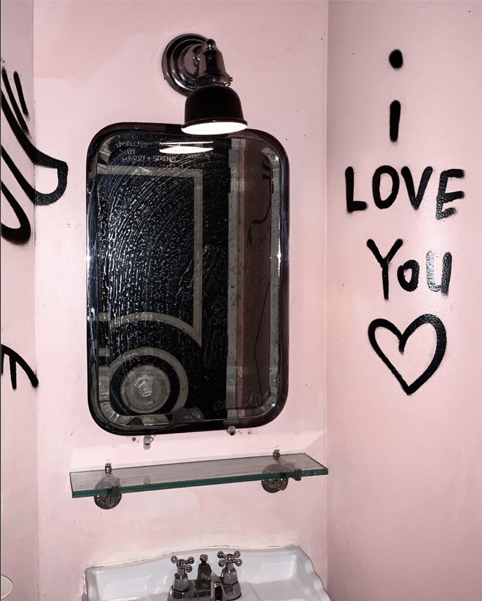
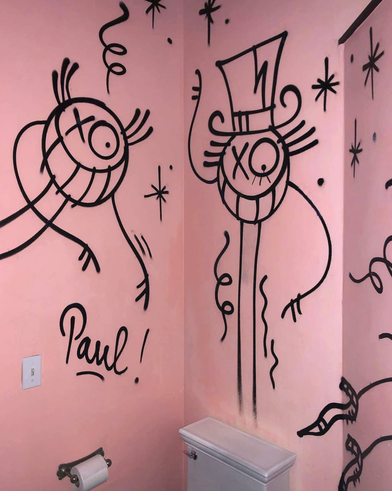
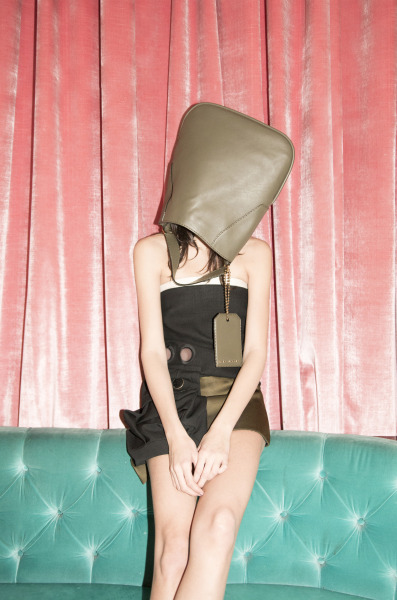
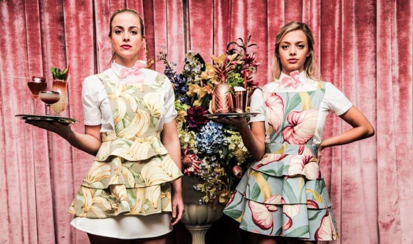
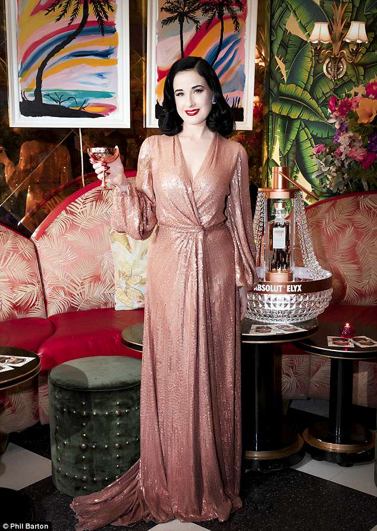
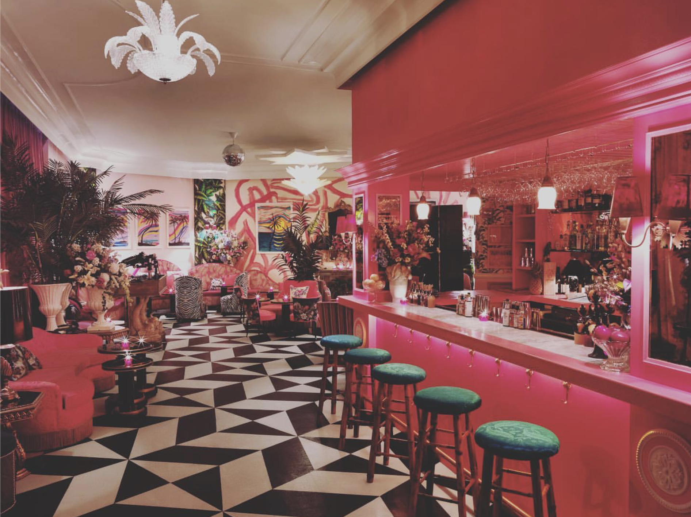
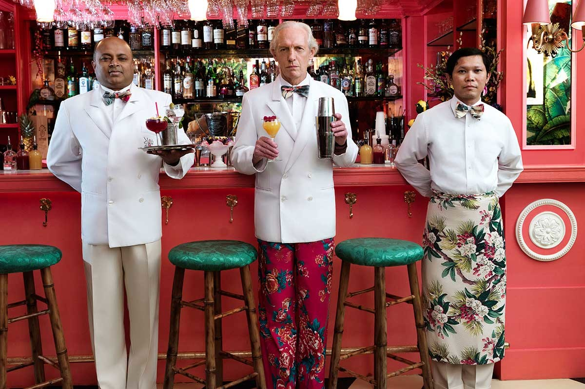
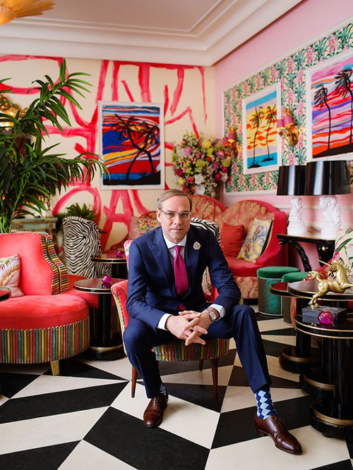
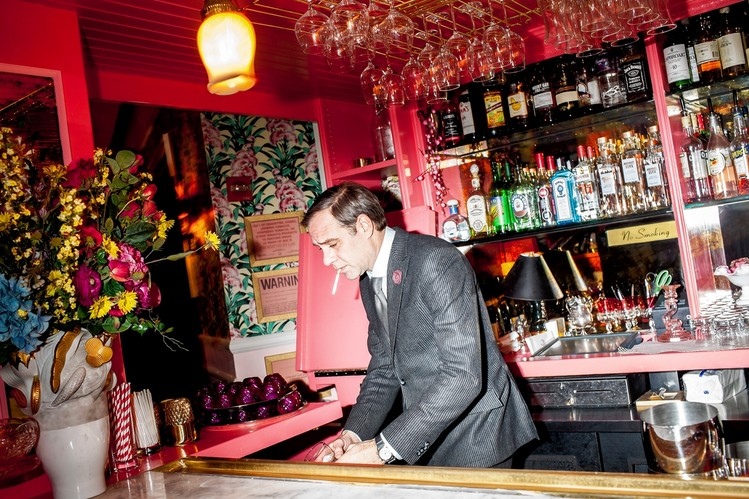
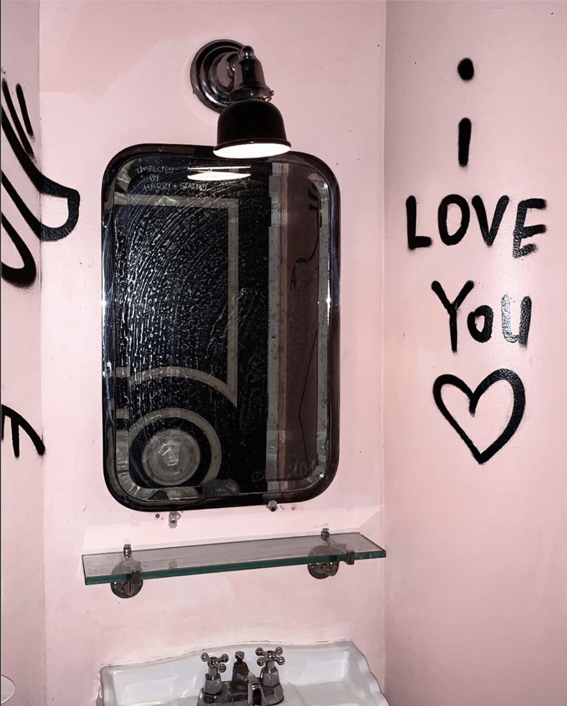
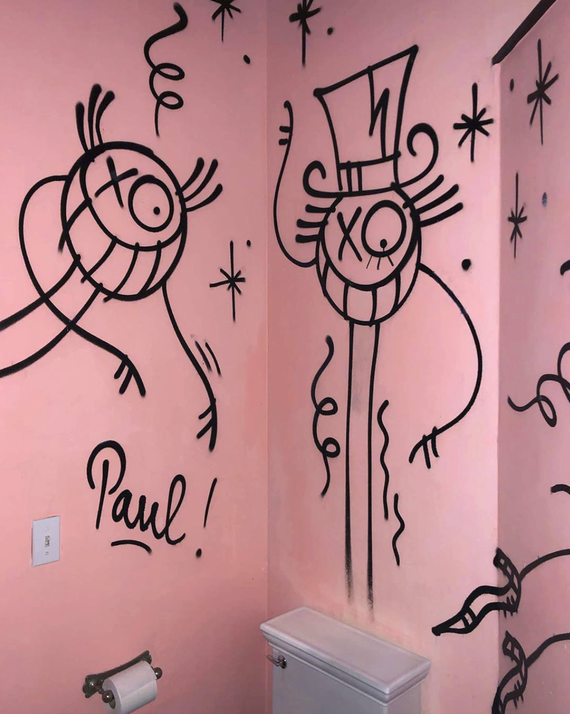
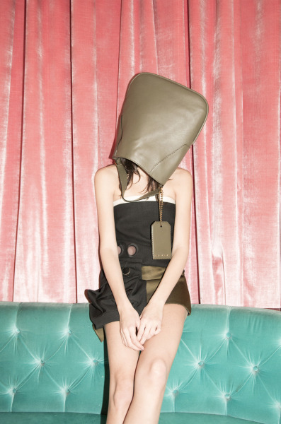
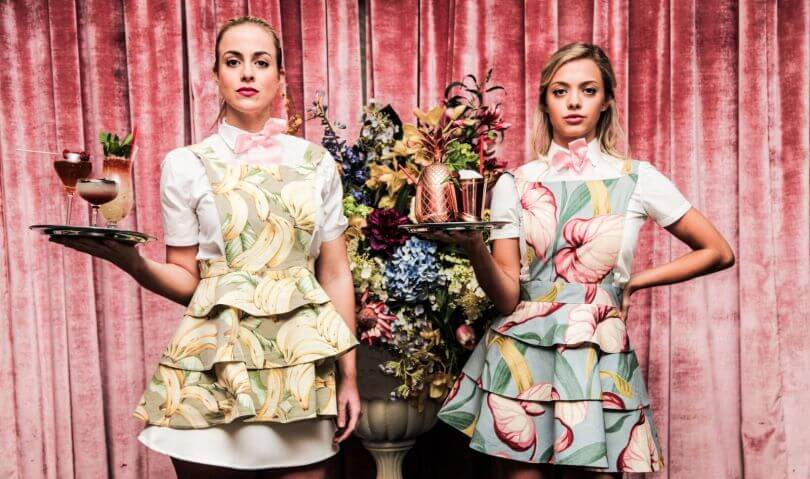
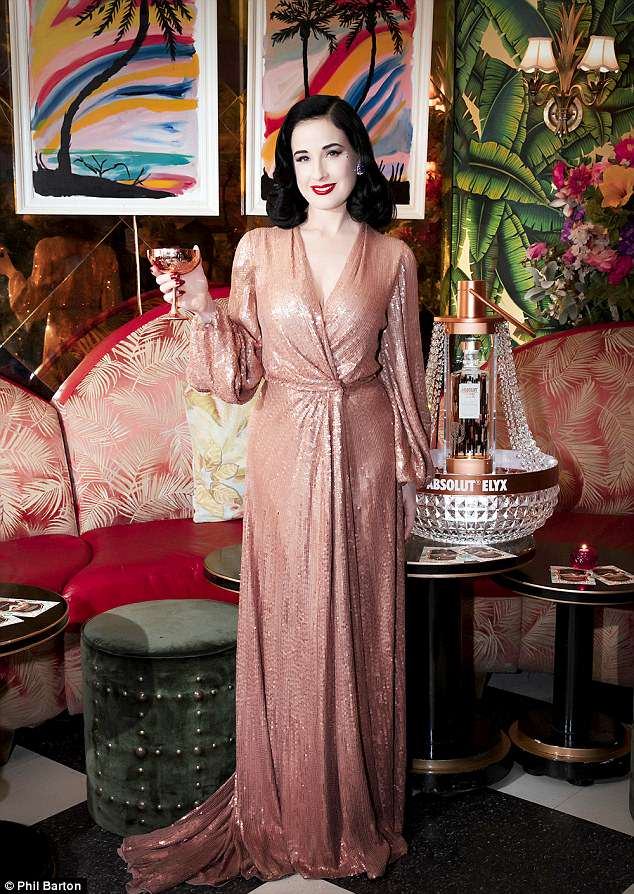
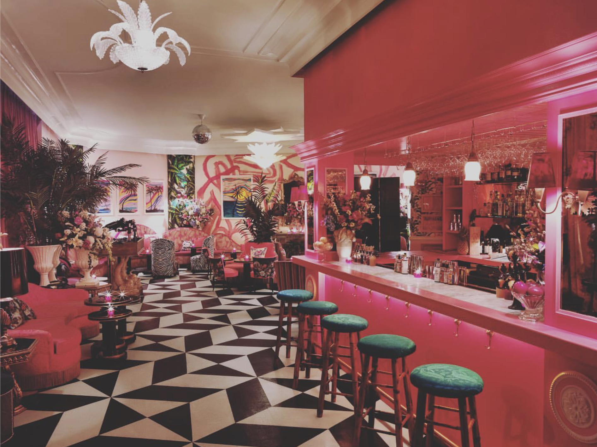
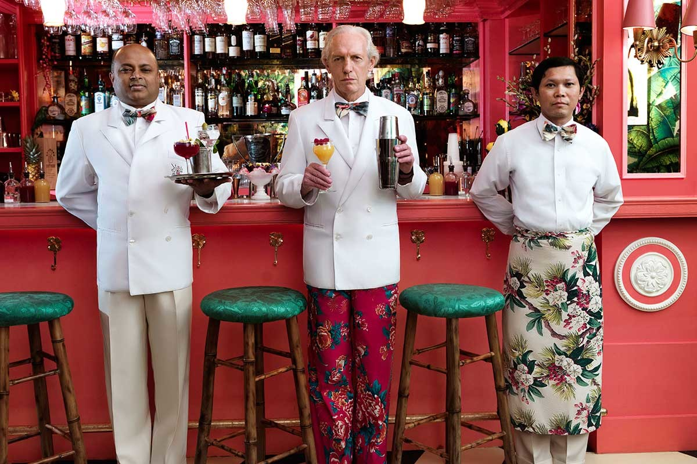
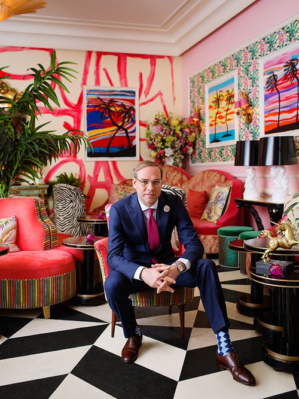
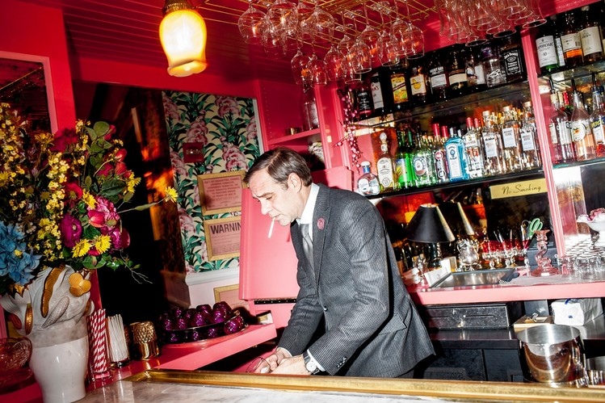